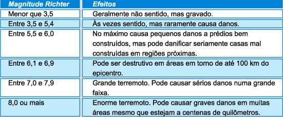

<!DOCTYPE html>
<html lang="pt-br">
    <head>
        <meta charset="utf-8">
        <link rel="shortcut icon" href="imagens/mag.ico" >
        <title>Cálculo de Terremoto</title>
        <link rel="stylesheet" href="css/estiloEscalaRichter.css"/>
        <script src="js/escalaRichter.js"></script>

    </head>
    <body>
        <div id="interface">
            <form name="calculoTerremoto">
                A magnitude M é calculada a partir da Equação:
                M = log10 A + 3*log10(8:&Delta;t) - 2,92</br></br>
                Sendo:
                <ul type="disc">
                    <li>M é a magnitude do terremoto;</li>
                    <li>A é a amplitude (em milímetros) medida com um sismógrafo:<input type="text" name="amplitude"/></li>
                    <li>&Delta;t é o intervalo de tempo (em segundos) entre a onda superficial (S) e a onda de pressão máxima (P):<input type="text" name="intervalo"/></a></li>
                </ul>
            </form>
            <button type="button" onclick="calcular()">Calcular</button>
            <p id="resultado">Resultado</p>
            <figure class="foto-escalaRichter">
                <h1>Compare seu resultado com a tabela a seguir: </h1>
                
            </figure>
            <footer id="rodape">
                <p>Copyright 2016 - by Leonardo de Souza<br/>
                <a href="https://www.facebook.com/leonardo.souza.94695" target="_blank">Facebook</a>
            </footer>
        </div>
    </body>
</html>
